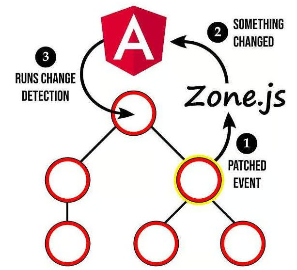
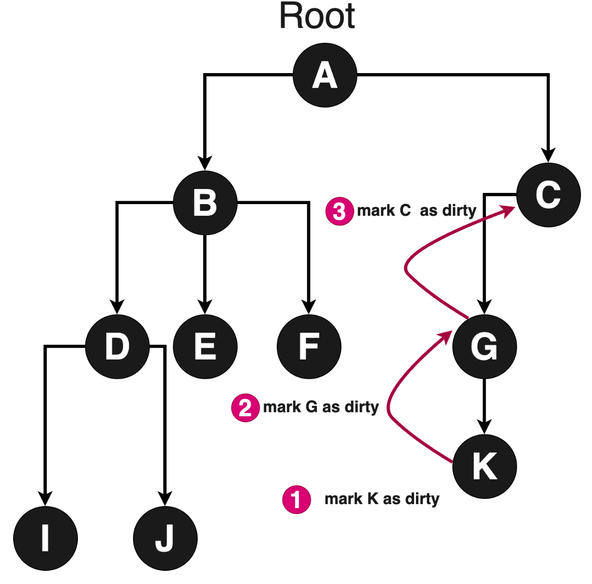

Angular
C'est quoi Angular ?
Angular est un framework front-end développé par Google pour créer des applications web modernes, robustes et maintenables
- Basé sur TypeScript
- Architecture orientée composants
- Pensé pour les applications SPA (Single Page Application)
- Très structuré by design
- Très utilisé en contexte professionnel / entreprise
Angular vs AngularJS
-
AngularJS :
- Crée par Misko Hevery (Google) en 2010
- Framework JavaScript Google, MVC, two-way data-binding
-
Angular 2+ :
- Refonte totale (AngularJS ≠ Angular)
- Par Misko Hevery + équipe angular en 2016
- TypeScript, architecture par composants, CLI
Angular
≠
AngularJS
(Pas le peine de chercher de la doc Angular dans la doc AngularJS)
Date clé Angular
-
Angular 2 (2016) à 16 (2023)
- montée en maturité (forms et HTTP stabilisés)
- performances
- tooling (CLI)
- Ivy*
-
Angular 16+ (2013) à 21: Baptisé renaissance
- Départ du lead dev
- Signaux (gestion d'état)
- Perf, DX amélioré (moins de code boilerplate)
- SSR / hydration simplifiés
A savoir: Du code Angular 2 marche dans un projet Angular 21
*Ivy est le moteur de rendu d'Angular qui compile les composants de façon plus efficace afin de réduire la taille des bundles, améliorer les performances et accélérer la compilation des applications
Version Angular
Une version tout les 6 mois (voir ici)

Liens utiles
Angular vs Vue vs React
- Angular : framework complet (routing, HTTP, forms intégrés), structurant, idéal pour les grosses applications
- React : bibliothèque orientée composants, très flexible, nécessite des librairies externes (routing, state management)
- Vue : framework progressif, simple à prendre en main, bon compromis entre Angular et React
-
Cas d'usage :
- Angular : projets structurés, équipes importantes
- React : produits très dynamiques, écosystème riche
- Vue : projets rapides, pédagogie, petites équipes
Choix du cours
- Angular 21
- Courbe d'apprentissage moins grande
- (Quelques notions de "comment c'était avant")
- Prérequis
- En dev: Node/Npm (ajout de lib, build, start dev...)
- Typescript
- Du CSS
-
Un IDE: vscode, intelij,...
- Pour les utilisateurs de VSCode installer l'extension Angular Language Service
Plan de cours
Création premier projet
structure
fichiers de conf
Installation Angular CLI
npm install -g @angular/cli # -g pour global installation
ng version
la cli constitue l'interface principale pour créer, développer, tester et livrer une application Angular.
Commandes principales de @angular/cli
| ng new | crée un nouveau projet Angular avec une configuration initiale complète |
| ng serve | lance un serveur de développement avec rechargement automatique |
| ng build | compile l'application pour le développement ou la production |
| ng generate | génère du code standardisé comme composants, services et routes |
| ng test | exécute les tests unitaires |
| ng lint | analyse la qualité et la conformité du code |
| ng add | ajoute et configure automatiquement des dépendances Angular compatibles |
Créer une nouvelle application
ng new mon-projet-de-fou-dingue
cd mon-projet-de-fou-dingue
npm start
Les options classiques qu'on met en place:

TP6
- Installer angular cli en global
- Créer un nouveau projet angular
- Installer les dépendances
- Lancer le serveur de dev + ouvrir l'appli
- Parcourir les fichiers checker un peu le contenu
Structure d'un projet Angular
tp6
├─ angular.json // configuration du workspace Angular (build, serve, assets)
├─ package-lock.json
├─ package.json // dépendances, scripts du projet
├─ public // dossier d'assets utilisé dans l'appli
│ └─ favicon.ico
├─ src
│ ├─ app
│ │ ├─ app.config.ts // configuration globale de l'application (providers, router, http)
│ │ ├─ app.routes.ts // définition du routage principal
│ │ ├─ app.ts // composant racine de l'application
│ │ ├─ app.html // template HTML du composant racine
│ │ ├─ app.css // styles CSS du composant racine
│ │ └─ app.spec.ts // tests unitaires du composant racine
│ ├─ index.html // page HTML hôte de l'application Angular
│ ├─ main.ts // point d'entrée, bootstrap de l'application
│ └─ styles.css // styles globaux partagés de l'application
├─ tsconfig.app.json // configuration TypeScript spécifique à l'application
├─ tsconfig.json // configuration TypeScript globale du projet
└─ tsconfig.spec.json // configuration TypeScript dédiée aux tests
Bootstrap Angular
index.html // page hôte Angular
↓ (<app-root>)
main.ts // point d'entrée de l'application, angular n'est pas encore démarré
// du coup on peut faire des trucs avant le bootstrap
↓ bootstrapApplication(AppComponent, appConfig) // démarre l'application angular avec :
↓ ↓
app.config.ts + AppComponent <app-root>
// configuration globale de l'application // composant racine de l'application
// (providers, router, http)
Fichiers de configuration TypeScript
Angular s'appuie sur plusieurs fichiers tsconfig afin de séparer la configuration TypeScript selon le contexte d'exécution. Cette séparation permet d'optimiser la compilation et d'adapter les règles aux usages spécifiques.
| Fichier | Rôle |
|---|---|
| tsconfig.json | configuration TypeScript globale du projet elle définit les options communes comme strict, target et module |
| tsconfig.app.json | configuration spécifique à l'application utilisée pour la compilation du code exécuté dans le navigateur |
| tsconfig.spec.json | configuration dédiée aux tests unitaires inclut les fichiers spec et les types nécessaires au framework de test |
Les fichiers tsconfig.app.json et tsconfig.spec.json étendent tsconfig.json afin d'hériter d'une base commune
Archi

Archi
Angular est basé sur une architecture modulaire et orientée composants. Les principales briques sont :
- Composants : unités réutilisables d'interface utilisateur
- Services : logique métier et partage de données
- Directives : manipulent le DOM et le comportement des éléments
- Pipes : transforment les données pour l'affichage
- Routage : navigation entre différentes vues
Les composants Angular
Composants - Base
- Bloc fondamental de toute application Angular
- C'est ce que voit l'utilisateur
- Représente une partie d'une page web
- Structurent l'application en parties maintenables et évolutives
- Un composant contient :
- Un décorateur @Component avec sa configuration
- Un template HTML qui contrôle le rendu DOM
- Un sélecteur CSS pour l'utilisation dans un template
- Une classe TypeScript avec le comportement
// Composant avec template inline
@Component({
selector: 'user-profile',
imports: [],
styles: `p { color: blue; }`,
template: `
User profile
This is the user profile page
`,
})
export class UserProfile {}// Composant avec template et styles externes
@Component({
selector: 'user-profile',
imports: [],
templateUrl: 'user-profile.html',
styleUrl: 'user-profile.css',
})
export class UserProfile {}Arbre de composants
@Component({
selector: 'user-profile',
imports: [UserBiography, ProfilePhoto],
template: `
TP7
- Dans le même dossier que pour le TP6
- Créer un composant "Header" avec la cli
- Afficher "Ma super application" dans le template
- Inclure le Header dans le template du composant racine (app.ts)
- Vérifier que le message s'affiche dans l'application
- Faire en sorte que le Header prenne toute la largeur de l'écran
- Ajouter un style de fond au Header
- Ajouter du contenu dans une balise main

Interface dynamiques avec les composants
(On va tout voir dans les slides suivantes)
@Component({
selector: 'app-salut',
imports: [],
template: `{{titre()}}
@if(titreAChange()) {
Le titre a été changé !
}`,
})
export class Salut {
public titre = signal("Bonjour tout le monde !");
public titreAChange = signal(false);
changerLeTitre() {
this.titreAChange.set(true);
this.titre.set("Salut les bg !");
}
}Interface dynamiques avec les composants

// Interpolation : afficher des valeurs dans le HTML
{{titre()}}
// Property binding : lier une propriété d'un élément HTML à une propriété du composant
// Event binding : lier un événement d'un élément HTML à une méthode du composant
// Control flow : modifier la structure du DOM en fonction d'une condition
@if(titreAChange()) {
Le titre a été changé !
}
Interpolation
L'interpolation permet d'afficher des valeurs dans le HTML
Utilisateur : {{ username() }}
Total : {{ total() }}
@Component({...})
export class UserProfile {
public username = signal('Alice');
public total = signal(42);
}
Property binding
Le property binding permet de lier une propriété DOM à une expression.

- Utilise la syntaxe [property]
- Fonctionne avec les propriétés DOM et directives
Top des property bindings Angular
| Property binding | Usage | Exemple |
|---|---|---|
| disabled | Activer ou désactiver un contrôle |
|
| value | Définir la valeur d'un champ |
|
| checked | Cocher / décocher checkbox ou radio |
|
| src | Source d'une image ou iframe |
|
| alt | Texte alternatif d'image, accessibilité |
|
| class | Ajouter / retirer une classe CSS |
|
| style | Appliquer un style inline dynamique |
|
| hidden | Masquer un élément (sans le retirer du DOM) |
|
| title | Afficher une info-bulle native |
|
Property binding : Angular écrit directement sur la propriété DOM, typée et utilisée par le navigateur.
Event binding
L'event binding permet de réagir aux événements utilisateurs.
@Component({
selector: 'user-profile',
imports: [],
template: `
`
})
export class UserProfile {
onSave() {
console.log('Profil sauvegardé !');
}
onInput(event: Event) {
const input = event.target as HTMLInputElement;
console.log('Input value:', input.value);
}
} - Utilise la syntaxe (event)
- Appelle une méthode du composant
- Les events natifs du DOM et ceux qu'on va dev
Top événements DOM essentiels
| Événement | Usage principal | Exemple Angular |
|---|---|---|
| click | Action utilisateur principale, boutons |
|
| input | Saisie temps réel, formulaires réactifs |
|
| change | Validation d'un champ, select, checkbox |
|
| submit | Envoi et validation d'un formulaire |
|
| keydown | Raccourcis clavier, navigation |
|
| keyup | Recherche, filtrage après saisie |
|
| focus | Entrée dans un champ, accessibilité |
|
| blur | Sortie de champ, validation |
|
Angular expose directement les événements natifs du DOM via la syntaxe (event)
Two-way binding
Le two-way binding combine lecture et écriture.
(ca existe perso je fais tout pour pas m'en servir)
- Surtout utilisé avec les formulaires simples
- À éviter au profit des Reactive Forms
Control flow natif
Angular fournit des structures de contrôle intégrées au langage de template.
@if (isLoggedIn()) {
Bienvenue
} @else {
Veuillez vous connecter
}
@for (item of items(); track item.id) {
{{ item.name }}
}
@let toto = 'salut les champions'
{{toto}}
Content projection (ng-content)
Recevoir du contenu HTML depuis un parent et de l'insérer à des emplacements précis de son template grâce à <ng-content>
- Réutilisation de composants
- Exemple: bouton générique, carte, modale...
- Exemple: ici
// Le fils controle l'insertion de contenu
@Component({
selector: 'app-card',
template: `
`
})
export class CardComponent {}
Titre de la carte
Contenu principal de la carte
TP8
- interpolation/controlflow/propertiy binding/ng content
- parcourir une liste
Angular Signals
Angular Signals
(Nouveau) Mécanisme réactif natif d'Angular pour gérer l'état
- Ils remplacent de nombreux usages complexes de RxJS pour l'état local
- Ils sont synchrones, prédictibles et typés
- Angular sait exactement quand recalculer et rerendre
Créer un signal
Un signal contient une valeur et notifie automatiquement les consommateurs lors des changements.
import { signal } from '@angular/core';
const count = signal(0);
count.set(1);
count.update(value => value + 1);
- signal() crée un état réactif
- set remplace la valeur
- update applique une transformation
Lire un signal
La lecture d'un signal se fait comme une fonction.
console.log(count());
Dans un template Angular, la lecture est automatique.
Valeur : {{ count() }}
Signals et composants
Les signals sont idéaux pour l'état local d'un composant.
@Component({
selector: 'counter',
template: `
{{ count() }}
`,
changeDetection: ChangeDetectionStrategy.OnPush
})
export class CounterComponent {
count = signal(0);
increment() {
this.count.update(v => v + 1);
}
}
Computed signals
Permet de dériver un état à partir d'autres signals
const doubleCount = computed(() => count() * 2); // Dépend de count
// Recalculer uniquement si count change
count.set(2);
console.log(doubleCount()); // Affiche 4
count.set(2);
console.log(doubleCount()); // Affiche 4 (car pas de changement)
count.set(5);
console.log(doubleCount()); // Affiche 10
count.update(v => v + 1);
console.log(doubleCount()); // Affiche 12
Effect
Exécute du code en réaction aux changements de signals
import { effect } from '@angular/core';
effect(() => {
console.log('count changed:', count());
});
- Utile pour le logging, les appels API ou le stockage local
- Ne doit pas modifier directement l'état
TP9
- signal
Input/Output
Input Signals
Les Input Signals permettent de déclarer des entrées de composant sous forme de signals, rendant les dépendances de données explicites et automatiquement réactives
// user-profile.component.ts
@Component({
selector: 'app-user-profile',
template: `
Utilisateur : {{ name() }}
Age : {{ age() }}
`
})
export class UserProfileComponent {
name = input.require<string>() // obligatoire
age = input<number>() // optionnel
}
Output Signals
Les Output Signals permettent d'émettre des événements vers le parent en utilisant une API basée sur les signals, plus simple et plus typée que EventEmitter.
- Déclaration via output()
- $event contient la valeur émise
- Utilisation avec la syntaxe (event)
// counter.component.ts
@Component({
selector: 'app-counter',
template: `
`
})
export class CounterComponent {
countChange = output<number>()
private count = 0
increment() {
this.count++
this.countChange.emit(this.count)
}
}
Bonnes pratiques
- Templates courts et lisibles
- Une responsabilité par composant
- Logique métier dans la classe
TP10
- signal
Services
Service : base
Un service est une classe TypeScript réutilisable qui encapsule une logique métier ou une fonctionnalité transversale
- Accès API (HTTP)
- Partage d'état
- Auth, logs, erreurs, caches
À quoi sert l'injection de dépendances ?
- Découpler les classes entre elles
- Éviter la création manuelle des dépendances
- Centraliser la gestion des instances
- Faciliter les tests unitaires (mocks, fakes)
- Améliorer la maintenabilité et l'évolutivité du code
Créer un service (providedIn: 'root')
// calculator.service.ts
import { Injectable } from '@angular/core';
@Injectable({ providedIn: 'root' }) // singleton global
export class CalculatorService {
add(x: number, y: number): number {
return x + y;
}
}
// app.component.ts
import { Component, inject } from '@angular/core';
import { CalculatorService } from './calculator.service';
@Component({
selector: 'app-root',
template: `Total : {{ total() }}
`
})
export class AppComponent {
private calc = inject(CalculatorService);
private total = signal(this.calc.add(5, 10));
}
- @Injectable() est une décoration qui indique à Angular que la classe est un service
- providedIn: 'root' signifie que le service est disponible dans toute l'application (la plupart du temps ce qu'on veut)
- inject() permet d'obtenir une instance du service dans un composant ou un autre service
Portée locale : providers dans le composant
Si le service est dans providers d'un composant, Angular crée une instance propre à ce composant et ses enfants
import { Component } from '@angular/core';
import { CalculatorService } from './calculator.service';
@Component({
selector: 'app-local',
standalone: true,
providers: [CalculatorService],
template: `Local total : {{ total() }}
`
})
export class LocalComponent {
private calc = inject(CalculatorService);
private total = signal(this.calc.add(1, 2)) ;
}
Signals : état dans un service
Un service peut héberger un état partagé via signals
@Injectable({ providedIn: 'root' })
export class CounterStore {
private _count = signal(0);
public readonly count = this._count.asReadonly();
inc(): void {
this._count.update(v => v + 1);
}
reset(): void {
this._count.set(0);
}
}
@Component({
selector: 'app-counter',
standalone: true,
template: `
Count : {{ store.count() }}
`
})
export class CounterComponent {
store = inject(CounterStore);
}
Note: asReadonly() pour exposer un signal en lecture seule
(impossible de bidouiller la valeur depuis l'extérieur)
TP11
- service, arbre de service, service local, store
Services - HTTP
Service HTTP
C'est un service pour communiquer avec un serveur
@Injectable({ providedIn: 'root' })
export class UserService {
constructor(private http: HttpClient) {}
getUsers() {
return this.http.get<User[]>('/api/users');
}
}//main.ts
bootstrapApplication(AppComponent, {
providers: [
provideHttpClient() // Fournit HttpClient dans l'application
]
});- Marche via provideHttpClient() dans main.ts
- Utilise RxJS (Observables) pour les appels asynchrones
- Supporte les requêtes GET, POST, PUT, DELETE, etc.
- Gère les en-têtes, les paramètres, les erreurs, etc.
RxJS
- C'est un library pour la programmation réactive
- Gérer des flux de données asynchrones
- Historique en Angular (depuis le début)
- Pas simple à maîtriser !!!!!!!!!!!!!!
- Mais pour le moment pas le choix
- L'API HTTP Angular retourne des Observables
- Appel http en parrallèle a la suite...
- Programmation réactive avancée
Les concepts clés
- Observable : source de données dans le temps
- Observer : consomme les données
- Subscription : lien entre les deux
// Créer un observable qui émet 3 valeurs puis se termine
const observable = new Observable(subscriber => {
subscriber.next(1); // Émettre des valeurs
subscriber.next(2);
subscriber.next(3);
subscriber.complete(); // Indique la fin de l'émission
});
// S'abonner à l'observable pour consommer les valeurs
observable.subscribe({
next: value => console.log(value), // Gérer chaque valeur émise
error: err => console.error('Erreur :', err), // Gérer les erreurs
complete: () => console.log('Terminé') // Gérer la fin de l'émission
});
// Sortie attendue :
// 1
// 2
// 3
// TerminéLes opérateurs
- De plusieurs types : création, transformation, filtrage, combinaison
- Utilisés avec la méthode pipe() des observables
- Permettent de composer des opérations sur les flux de données
- Exemples courants :
- map : transformer les valeurs
- filter : filtrer les valeurs
of(1, 2, 3, 4) // Observable qui émet 1, 2, 3, 4
.pipe( // Appliquer des opérateurs avec pipe()
filter(n => n % 2 === 0), // Garder que les nombres pairs
map(n => n * 10) // Multiplier chaque nombre par 10
)
.subscribe(value => console.log(value)); // Consommer les valeurs transformées
// Avant l'appel à subscribe, rien ne se passe !
// Sortie attendue :
// 20
// 40RxJS — Fonctions les plus utilisées
| Fonction | Catégorie | Rôle | Exemple |
|---|---|---|---|
| of | Creation | Créer un observable à partir de valeurs |
|
| from | Creation | Créer un observable depuis un tableau ou une promesse |
|
| map | Transformation | Transformer les valeurs |
|
| filter | Filtering | Filtrer les valeurs |
|
| tap | Utility / Side effects | Effets de bord (logs, debug) |
|
| switchMap | Transformation | Changer de flux (HTTP, recherche) |
|
| forkJoin | Combination | Appeler plusieurs WS en parallèle et attendre tous les résultats |
|
| subscribe | Subscription | Démarrer l'exécution et consommer les valeurs |
|
| unsubscribe | Subscription | Arrêter l'exécution et libérer les ressources |
|
| takeUntil | Subscription | Se désabonner automatiquement à la réception d'un signal |
|
Cas d'utilisation — HTTP
En Angular, les appels HTTP retournent des observables
@Injectable({ providedIn: 'root' })
export class UserService {
constructor(private http: HttpClient) {}
getUsers() {
return this.http.get<User[]>('/api/users');
}
}
// Dans un composant ou un autre service
this.userService.getUsers().subscribe(users => {
this.users = users;
});
- L'appel HTTP n'est effectué qu'à l'abonnement (subscribe)
- Complete automatique après la première valeur (pas de fuite mémoire)
Exemple 1: Appels en parallèle
J'appelle 2 WS en parallèle et j'attends les 2 résultats avant de continuer : forkJoin
@Injectable({ providedIn: 'root' })
export class UserService {
private http = inject(HttpClient);
getContratsEtFactures(userId: number) {
return forkJoin({
contracts: this.http.get<Contract[]>(`/api/contracts?userId=${userId}`),
invoices: this.http.get<Invoice[]>(`/api/invoices?userId=${userId}`)
});
}
}this.userService.getContratsEtFactures(123).subscribe(({ contracts, invoices }) => {
this.contracts = contracts;
this.invoices = invoices;
});Exemple 2: Appels en séquentiel
J'appelle un WS et le resultat de l'appel sert à appeler 2 WS en parallèle
@Injectable({ providedIn: 'root' })
export class UserService {
private http = inject(HttpClient);
getInvoices(username: string) {
return this.http.get<User>(`/api/users?name=${username}`).pipe(
switchMap(user =>this.http.get<Invoice[]>(`/api/invoices?userId=${user.id}`))
);
}
}this.userService.getInvoices('John').subscribe(invoices => {
this.invoices = invoices;
});Finalement c'est pas si dur ?
Exemple: j'appelle un WS et le resultat de l'appel sert à appeler 2 WS en parallèle + j'ai des filtres + du logging + du mapping + des erreurs
@Injectable({ providedIn: 'root' })
export class UserService {
private http = inject(HttpClient);
getDashboard(username: string) {
return this.http.get<User>(`/api/users?name=${username}`).pipe(
tap(user => console.log('[User]', user)),
filter(user => user.active === true),
switchMap(user =>
forkJoin({
contracts: this.http.get<Contract[]>(`/api/contracts?userId=${user.id}`),
invoices: this.http.get<Invoice[]>(`/api/invoices?userId=${user.id}`)
}).pipe(
tap(({ contracts, invoices }) => console.log('[Raw]', { contracts, invoices })),
map(({ contracts, invoices }) => ({
userId: user.id,
username: user.name,
contractsCount: contracts.length,
unpaidInvoices: invoices.filter(i => i.status === 'UNPAID'),
totalUnpaid: invoices
.filter(i => i.status === 'UNPAID')
.reduce((sum, i) => sum + i.amount, 0)
}))
)
),
catchError(err => {
console.error('[Dashboard error]', err);
return throwError(() => new Error('Impossible de charger le dashboard'));
})
);
}
}// Dans un composant ou un autre service
this.userService.getDashboard('John').subscribe({
next: dashboard => {
this.dashboard = dashboard;
},
error: err => {
this.errorMessage = err.message;
}
});
// Et du coup si ca marche pas, on fait quoi ?
// Les premieres fois très concrètement : mouchoir
Service HTTP : Observable
import { Injectable, inject } from '@angular/core';
import { HttpClient } from '@angular/common/http';
import { Observable } from 'rxjs';
export type User = { id: number; name: string };
@Injectable({ providedIn: 'root' })
export class UsersApi {
private http = inject(HttpClient);
// un GET
list(): Observable<User[]> {
return this.http.get<User[]>('/api/users');
}
// un POST
create(user: Partial<User>): Observable<User> {
return this.http.post<User>('/api/users', user);
}
// un DELETE
delete(userId: number): Observable<void> {
return this.http.delete<void>(`/api/users/${userId}`);
}
// etc
}Lien avec le composant en Angular 21
Le mieux c'est d'utiliser les interop Signals / Observables
@Component({
selector: 'app-root',
template: `
@for (user of users(); track user.id) {
{{ user.name }}
}
`
})
export class AppComponent {
private api = inject(UsersApi);
users = toSignal(this.api.list(), { initialValue: [] }); // transformation Observable → Signal
}Interop : Signal → Observable (toObservable)
Utile quand tu veux réutiliser un flux RxJS (operators) à partir d'un signal
@Component({
selector: 'app-search',
standalone: true,
template: `
Résultats : {{ results().length }}
`
})
export class SearchComponent {
private api = inject(SearchApi);
term = signal('');
private term$ = toObservable(this.term);
results = toSignal(this.api.search(this.term$), { initialValue: [] });
}Services - Intercepteur
Intercepteur HTTP
- Intercepte les requêtes HTTP sortantes et les réponses entrantes
- Ajouter des en-têtes (auth, logs)
- Gérer les erreurs globales
- Modifier les réponses (caching, transformation)
- Fonctionne comme un middleware
- req represente la requête HTTP entrante (readonly)
- next sert a passer la requête au prochain intercepteur ou au backend
// mon-super-intercepteur.ts
export function monSuperIntercepteur(req: HttpRequest<unknown>,next: HttpHandlerFn): Observable<HttpEvent<unknown>> {
// On peut modifier la requête ici
return next(req).pipe(
tap((event) => { /* On peut inspecter ou modifier la réponse ici */ }),
);
}
//main.ts
bootstrapApplication(AppComponent, {
providers: [provideHttpClient(withInterceptors([monSuperIntercepteur]))],
});Intercepteur HTTP: Exemple 1
Modifier la requête avant qu'elle soit envoyée
export function authInterceptor(req: HttpRequest<unknown>, next: HttpHandlerFn) {
const authToken = inject(AuthService).getAuthToken();
const newReq = req.clone({ headers: req.headers.append('X-Authentication-Token', authToken) });
return next(newReq);
}
-
Possibilité d'injecter des services
(Mais pas partout, il faut être dans un contexte d'injection) - Pour modifier la requête, il faut la cloner (immutable)
Intercepteur HTTP: Exemple 2
Agir sur la reponse
export function loggingInterceptor(req: HttpRequest<unknown>, next: HttpHandlerFn) {
console.log('Request sent:', req);
return next(req).pipe(
tap((event) => {
if (event instanceof HttpResponse) {
console.log('Response received:', event);
}
}
),
);- Utile pour le logging ou le debugging
- Ne pas modifier la réponse directement
TP12
- intercepteur HTTP
Routage
C'est quoi ?
Le routeur Angular permet de gérer la navigation entre différentes
vues (composants) dans une application SPA
Une route est un objet qui décrit quoi afficher pour un chemin
d'URL
- Rappel: SPA = Single Page Application = une seule page html
- Encore un concept bien puissant :
- Routage de composant
- Sous-routes : insertion de composant dans un autre
- Lazy loading : chargement à la demande
- Paramètres dans l'URL
- Controle d'accès (guards)
- Chargement de données avant l'affichage (resolvers)
Déclarer des routes
Dans des fichiers *.routes.ts (ex: app.routes.ts)
// app.routes.ts
import { Routes } from '@angular/router';
import { HomePage } from './home/home-page';
import { AdminPage } from './admin/admin-page';
export const routes: Routes = [
{ path: '', component: HomePage },
{ path: 'admin', component: AdminPage },
{ path: 'user', component: UserPage },
];- Visiter / affiche HomePage
- Visiter /admin affiche AdminPage
Brancher le router
Avec provideRouter(routes) au bootstrap
import { ApplicationConfig } from '@angular/core';
import { provideRouter } from '@angular/router';
import { routes } from './app.routes';
export const appConfig: ApplicationConfig = {
providers: [
provideRouter(routes),
],
};- On peut (et doit pour une vrai application) avoir plusieurs fichiers de routes
- Mais ici on en importe tjs un seul, qui regroupe toutes les routes
- Il faut voir ca comme un arbre de routes, a coté des composants et services
Naviguer dans l'application (1)
Avec la directive routerLink dans les templates
<a [routerLink]="['/user', userId()]">Voir le profil</a> // Property binding<a routerLink="/admin">Aller à l'admin</a> // Lien statique- Le tableau passé à routerLink est concaténé pour former le path
- Utile pour les routes avec paramètres (ex: /user/123)
Naviguer dans l'application (2)
Avec le service Router dans le code TypeScript
import { Router } from '@angular/router';
@Component({ selector: 'app-some', template: `` })
export class SomeComponent {
private router = inject(Router);
goToUserProfile(userId: string) {
this.router.navigate(['/user', userId]);
}
}- Utile pour naviguer en réponse à une action utilisateur (ex: bouton)
- Permet de construire dynamiquement le chemin (avec paramètres)
Route params : URL dynamiques
Paramètres avec : (ex: user/:id)
import { Routes } from '@angular/router';
import { UserProfile } from './user-profile/user-profile';
export const routes: Routes = [
{ path: 'user/:id', component: UserProfile }, // Exemples : /user/leeroy, /user/jenkins
];// Dans UserProfile component
@Component({ selector: 'app-user-profile', template: ``})
export class UserProfile {
// Option 1: avec snapshot (ne réagit pas aux changements de paramètre)
userId = toSignal(inject(ActivatedRoute).params.pipe(map(params => params['id'])));
// Option 2: avec withComponentInputBinding
// il faut mettre provideRouter(appRoutes, withComponentInputBinding()) dans main.ts
id = input();
}- Permet de créer des routes dynamiques (ex: profil utilisateur, détails produit)
- Récupération des paramètres via ActivatedRoute ou withComponentInputBinding
Ordre des routes : “first match wins”
Le router prend la première route qui match : la spécificité compte
export const routes: Routes = [
{ path: '', component: HomeComponent },
{ path: 'toto', redirectTo: '' }, // redirige /toto vers /
{ path: 'users/new', component: NewUserComponent }, // route spécifique (priorité sur users/:id)
{ path: 'users/:id', component: UserDetailComponent },
{ path: 'users', component: UsersComponent },
{ path: '**', component: NotFoundComponent }, // match tout le reste
];Routes avancées : children
export const routes: Routes = [
{
path: 'product',
component: ProductComponent,
children: [
{ path: 'info', component: ProductInfoComponent },
{ path: 'reviews', component: ProductReviewsComponent },
],
},
];
// Dans product.component.ts
@Component({
selector: 'app-product',
template: `
<h2>Product Details</h2>
<router-outlet></router-outlet>
`
})
- Les routes enfants sont des routes qui s'appliquent à un composant parent
- Le composant parent doit contenir un <router-outlet> pour afficher les enfants
- Permet de controler des vues imbriquées
- Ici /product/info affiche ProductInfoComponent dans ProductComponent
Routes avancées : children
// app.routes.ts
export const routes: Routes = [
{
path: 'product',
component: ProductComponent,
loadChildren: () => import('./product/product.routes').then(m => m.productRoutes)
},
];// product.routes.ts
export const productRoutes: Routes = [
{ path: 'info', component: ProductInfoComponent },
{ path: 'reviews', component: ProductReviewsComponent },
];
- Permet de découper les routes dans plusieurs fichiers
- Utile pour les routes avec beaucoup d'enfants ou des domaines fonctionnels distincts
Chargement : eager vs lazy
component = eager (bundle initial), loadComponent = lazy (import dynamique)
export const routes: Routes = [
{ path: 'main', loadComponent: () => import('./main/main-page').then(m => m.MainPage) },
{ path: 'login', component: LoginPage},
{ path: 'admin', loadChildren: () => import('./admin/admin.routes').then(m => m.adminRoutes) },
];On ne veut pas charger tout le code de l'application au démarrage (avant authentitication de l'utilisateur par exemple)
Routage - Control d'accès
Guards
Les guards sont des fonctions qui permettent de contrôler l'accès aux routes voir ici
- Implémentent la logique d'autorisation
- Décident si une route peut être activée ou non
- Utilisent l'injection de dépendances pour accéder aux services
export function authGuard(): CanActivateFn {
const authService = inject(AuthService);
const router = inject(Router);
return authService.isLoggedIn() ? true : router.parseUrl('/login');
}export const routes: Routes = [
{ path: 'admin', canActivate: [authGuard] },
{ path: 'login', component: LoginPage },
];Directives
Pipes
Form
Formulaire
"L'élément HTML form représente une section du document contenant des contrôles interactifs permettant de soumettre des informations." *
- Saisie utilisateur structurée
- Validation côté client
- Gestion de l'état (valide, invalide, touched, dirty)
- Intégration forte avec TypeScript
Les deux approches Angular
- Template-driven forms
- Reactive forms
En contexte professionnel, on privilégie Reactive Forms
(en tout cas chez nous !)
- Code plus explicite
- Meilleure testabilité
- Logique côté TypeScript
Qu'est-ce qu'un Reactive Form ?
Un Reactive Form est défini entièrement en TypeScript à l'aide d'objets immuables représentant l'état du formulaire.
- FormControl : un champ
- FormGroup : un formulaire
- FormArray : une liste dynamique de champs
Créer un FormControl
Un champ avec une valeur initiale et des validateurs
import { FormControl, Validators } from '@angular/forms';
const emailControl = new FormControl('', [
Validators.required,
Validators.email,
]);Créer un FormGroup
Un formulaire composé de plusieurs champs
import { FormGroup, FormControl, Validators } from '@angular/forms';
const loginForm = new FormGroup({
email: new FormControl('', [Validators.required, Validators.email]),
password: new FormControl('', Validators.required),
});Lier le formulaire au template
Connexion entre TypeScript et HTML
<form [formGroup]="loginForm">
<input type="email" formControlName="email">
<input type="password" formControlName="password">
</form>- Utilisation de formGroup pour lier le formulaire
- Utilisation de formControlName pour chaque champ
Lire l'état du formulaire
Chaque champ expose son état
| Propriété | Signification | Exemple |
|---|---|---|
| valid | valide ou non |
|
| invalid | invalide ou non |
|
| touched | touché ou non |
|
| untouched | non touché |
|
| dirty | modifié ou non |
|
| pristine | non modifié |
|
| errors | objet contenant les erreurs de validation |
|
| value | valeur actuelle du champ ou du formulaire |
|
Validation des formulaires
- Validators intégrés Angular
- required
- minLength / maxLength
- pattern
- Possibilité de créer des validateurs personnalisés
password: new FormControl('', [
Validators.required,
Validators.minLength(8),
]);Réagir aux changements
Les formulaires exposent des observables RxJS
this.loginForm.valueChanges.subscribe(value => {
console.log(value);
});
this.loginForm.statusChanges.subscribe(status => {
console.log(status);
});Soumettre un formulaire
onSubmit() {
if (this.loginForm.valid) {
console.log(this.loginForm.value);
}
}<form [formGroup]="loginForm" (ngSubmit)="onSubmit()">
</form>Angular material
Angular Material
- Une lib crée et maintenu par l'équipe Angular (Voir ici)
- Plusieurs aspects présent
- Bibliothèque de composant haut niveau prêts à l'emploi
- Implémentation du design system material
- Un CDK (=des API plutôt bas niveau) pour construire et tester des composants
Pourquoi Angular Material ?
- Concernant les composants haut niveau
- Gagner du temps sur l'UI
- Bon niveau d'accessibilité (a11y)
- Marche sur tout les navigateurs
- Concernant le CDK
- Top quand on a un design system imposé
- Briques techniques sans design imposé
- Gestion du focus, clavier et accessibilité
- Test Harness pour des tests robustes et maintenables
Installation
ng add @angular/materialIci j'ai choisi Azure/Blue, il y en a plusieurs existant avec la possibilité custom des éléments (Voir ici)
Premier exemple
@Component({
standalone: true,
imports: [MatButtonModule],
template: ``
})
export class ExampleComponent {}- Pas oublié d'importer le composant
- Via son module (vestige des anciennes versions)
Composants Angular Material les plus utilisés
| Composant | Description |
|---|---|
| MatButton | Boutons Material (primary, accent, warn, actions utilisateur) |
| MatInput | Champ de saisie texte intégré aux formulaires |
| MatFormField | Conteneur de champs avec label, erreurs et accessibilité |
| MatIcon | Affichage d’icônes Material |
| MatDialog | Fenêtres modales (confirmation, formulaire, alerte) |
| MatTable | Tableaux de données avec tri, pagination et filtres |
| MatSnackBar | Messages temporaires de notification |
Angular Material + Reactive Forms
@Component({
imports: [ReactiveFormsModule, MatFormFieldModule, MatInputModule, MatButtonModule],
template: `
<form [formGroup]="form" (ngSubmit)="submit()">
<mat-form-field>
<mat-label>Email</mat-label>
<input matInput type="email" formControlName="email"/>
</mat-form-field>
<button mat-raised-button color="primary" type="submit" [disabled]="form.invalid">
Envoyer
</button>
</form>
`
})
export class ExampleComponent {
form = new FormGroup({
email: new FormControl('', [
Validators.required,
Validators.email
])
});
submit() {
console.log(this.form.value);
}
}Angular (avant Angular 16 & 21)
Angular (avant Angular 16 & 21)
- Architecture basée sur NgModules
- Pas de standalone components
- Pas de signals
- Change detection avec zonejs
Architecture centrale : NgModules
Toute application Angular était organisée autour des modules
- Déclarer les composants, directives, pipes
- Gérer les imports
- Gérer les exports
- Gérer l'injection de dépendances

Les modules
Les composants doivent être déclarés dans un module.
@Component({
selector: 'app-home',
templateUrl: './home.component.html'
})
export class HomeComponent {
title = 'Home';
}@NgModule({
declarations: [HomeComponent], // Il faut declarer tout les composants du module
imports: [
CommonModule
],
providers: [
HomeService, // Provider disponible pour et que pour module
],
exports: [HomeComponent] // Et choisir ceux qu'on exporte en dehors du module
})
export class HomeModule {}- Impossible de les utiliser sans les déclarer dans un Module
- Pour le moment il y a encore la notions de modules dans les tests
Pas de Signals, pas d'inject
Tout repose sur RxJS: il y en a partout
@Component({
selector: 'app-home',
template: `{{titre | async}}
`
})
export class HomeComponent {
titre: Observable<string>;
constructor(private homeService: HomeService){}
}@Component({
selector: 'app-home',
template: `{{titre}}
`
})
export class HomeComponent {
titre: string;
constructor(private homeService: HomeService){
homeService.getTitle()
.pipe(takeUntilDestroyed()) // sinon fuite mémoire, l'observable est pas kill
.subscribe(titre => this.titre2 = titre);
}
}- Méthode 1 avec le pipe async : gérer tout seul le kill de l'observable
- Méthode 2 subscribe dans le composant: il faut faire attention au fuite mémoire
Change Detection classique
Angular détecte les changements automatiquement via la zone.js
- Change detection globale
- Déclenchée par événements, timers, HTTP
- Peut être coûteuse sur de grosses apps
 
RxJS partout
RxJS est la pierre angulaire pour :
- HTTP
- Formulaires (valueChanges)
- Communication entre composants
- Gestion d'état avancée
this.http.get('/api/users')
.subscribe(users => this.users = users);Limites et à retenir
- Pourquoi ca a évolué ?
- Beaucoup de boilerplate
- NgModules complexes à maintenir
- Change detection parfois coûteuse
- Montée en complexité sur gros projets
- A retenir
- Angular 16 (standalone) et 21 (signals)
- Encore beaucoup utilisée
- Mécanisme de module utilisé dans les tests
Tests Angular
Pourquoi tester ?
- Détecter les bugs tôt
- Documenter le comportement attendu
- Refactorer sans peur
- Améliorer la qualité (contrats clairs)
Ca peut sembler évider mais quand l'application grossi, c'est hyper utile de savoir tout les cas possible des composants
C'est un des endroits ou il faut être le plus rigoureux
Approches et type de tests
La question est de savoir évaluer le rapport coût/qualité
| Tests statiques | Analyser le code sans l’exécuter (Type checking, formatage, linting) |
| Tests unitaires | Tester un composant ou une fonction isolée |
| Tests d’intégration | Vérifier le fonctionnement de plusieurs composants ensemble |
| Tests end-to-end (E2E) | Simuler un parcours utilisateur complet |
Stack par défaut (Angular CLI)
- Runner de tests : Vitest (par défaut sur les nouveaux projets)
- API d'assertions : expect
- Mocks / spies : vi.fn(), vi.spyOn()
- Environnement DOM : jsdom
ng testStructure d'un test
- describe = un ensemble de test
- it = un test = une intention clair de test
- expect = une assertion = je m'attend a ce que j'ai ceci ou cela
- Optionnel : structurer en given, when, then
describe('sum', () => {
it('should be 5 when 2 is added to 3', () => {
// Given
const a = 2;
const b = 3;
// When
const result = a + b;
// Then
expect(result).toBe(5);
});
});TestBed : le "container" de tests Angular
TestBed permet de configurer un module de test : providers, imports,
composants
(C'est pour ca qu'il faut savoir ce qu'est un
module)
beforeEach(() => {
TestBed.configureTestingModule({
providers: [],
imports: [],
});
});Tester un service (DI + mocks)
describe('UserService', () => {
function setup(loggerMock: Logger) {
await TestBed.configureTestingModule({
providers: [
{ provide: Logger, useValue: loggerMock },
],
});
return TestBed.inject(UserService)
}
it('logs when creating a user', () => {
// Given
const loggerMock = { log: vi.fn() };
const { facade } = setup(loggerMock);
// When
const user = facade.createUser('Alice');
// Then
expect(loggerMock.log).toHaveBeenCalledWith('create:Alice');
});
});class Logger {
log(_msg: string) {}
}
@Injectable({providedIn: 'root'})
export class UserService {
logger = inject(Logger);
createUser(name: string) { this.logger.log(`create:${name}`); }
}Tester un service (DI + mocks)
describe('UserService', () => {
function setup(loggerMock: Logger) { // fonction setup pour configurer l'environnement de test
await TestBed.configureTestingModule({ // (On peut aussi passer par un beforeEach
providers: [ // mais faudra déclarer des variables intermédiaires)
{ provide: Logger, useValue: loggerMock }, // ici on inject le mock de Logger
],
});
return TestBed.inject(UserService) // Et on créer le service sur la base de l'environnement de test
}
it('logs when creating a user', () => { // début du test
// Given
const loggerMock = { log: vi.fn() }; // Création du mock de logger avec vitest
const { userService } = setup(loggerMock); // Création du service à tester
// When
const user = userService.createUser('Alice'); // Appel de la fonction testé
// Then
expect(loggerMock.log).toHaveBeenCalledWith('create:Alice'); // Assertions
});
});Tester l'HTTP : HttpTestingController
On intercepte les requêtes et on "flush" une réponse mockée, sans serveur réel
@Injectable({providedIn: 'root'})
class UserService {
private http = inject(HttpClient);
getUsers() { return this.http.get<User[]>('/api/users'); }
}
describe('UserService', () => {
let userService: UserService; // Quand on utilise beforeEach il faut des var intermédiaires
beforeEach(async () => {
TestBed.configureTestingModule({
providers: [
UserService,
provideHttpClient(), // Comme dans main.ts il ce provide pour faire des appels HTTP
provideHttpClientTesting(), // + un service fourni par angular pour les tests HTTP
],
});
userService = TestBed.inject(UserService);
});
it('mocks GET /api/users', () => {
const httpMock = TestBed.inject(HttpTestingController); // service permettant les mock HTTP
let received: any;
api.getUsers().subscribe(data => received = data);
const req = httpMock.expectOne('/api/users'); //
expect(req.request.method).toBe('GET'); // Définition de ce que va retourner l'API
req.flush([{ id: 1, name: 'Alice' }]); //
expect(received[0].name).toBe('Alice');
httpMock.verify(); // A la fin on verifie que ca a bien été appelé
});
});Tester un composant : ComponentFixture
Un composant = classe + template : on teste l'intégration des 2 via le DOM
@Component({selector: 'app-counter',
template: `
{{ value() }}
`,
})
class CounterComponent {
value = signal(0);
inc() { this.value.update(v => v + 1); }
}
describe('CounterComponent', () => {
it('increments value on click', async () => {
await TestBed.configureTestingModule({
imports: [CounterComponent],
}).compileComponents();
const fixture = TestBed.createComponent(CounterComponent);
fixture.detectChanges();
const btn: HTMLButtonElement = fixture.nativeElement.querySelector('button');
btn.click();
fixture.detectChanges();
const valueEl: HTMLElement = fixture.nativeElement.querySelector('[data-testid="value"]');
expect(valueEl.textContent?.trim()).toBe('1');
});
});Bravo et merci
Bonne pratiques: organisation du dossier app/
tp6
...
├─ src
│ ├─ app
│ │ ├─ core/ // services singleton, logique transverse
│ │ │ ├─ services/
│ │ │ └─ guards/
│ │ ├─ features/ // domaines fonctionnels (lazy loading)
│ │ │ └─ user/
│ │ │ ├─ user.routes.ts
│ │ │ └─ user.component.ts
│ │ ├─ shared/ // composants et utilitaires réutilisables
│ │ │ ├─ components/
│ │ │ └─ pipes/
│ │ ├─ app.routes.ts // routage principal
│ │ └─ app.component.ts // composant racine
...